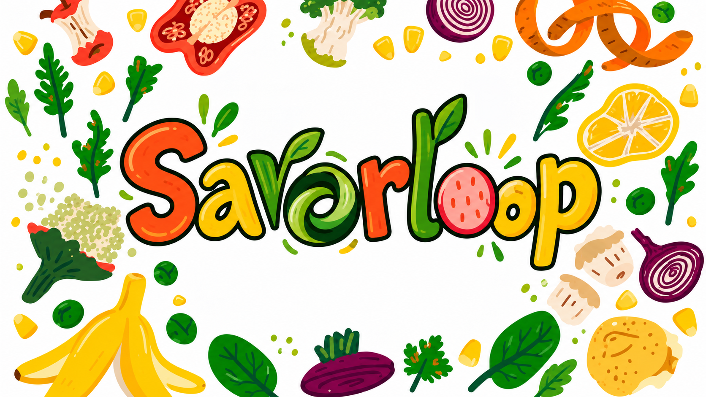

📝
Plan before shopping
Check what you already have and make a short shopping list before buying more.
Savorloop is a simple food-waste service designed to help households make better use of the food they already have, reduce unnecessary waste and save money.

Savorloop encourages people to reduce avoidable food waste through meal planning, correct storage, portion awareness and creative use of leftovers.
The service is designed to make food management easier by helping users keep track of what they have, discover ways to use ingredients and build better everyday habits.
Check what you already have and make a short shopping list before buying more.
Keep food that needs using soon at the front of your fridge or cupboard.
Turn leftover ingredients into soups, sandwiches, pasta dishes or simple lunches.
Freeze suitable food before it goes out of date instead of throwing it away.
Choose a simple membership option based on how much support you want with planning meals and reducing household food waste.
Demo pricing for this university project. No real payment will be taken.
Questions about a plan, the project or how Savorloop works? Visit our contact page for our email address, telephone number and contact form.
Contact Us